| 图类型 | 回答的问题 | 适用阶段 |
|---|---|---|
| 用例图 | 谁用系统？系统做什么？ | 需求获取 |
| 数据流图 | 数据怎么流动？经过哪些加工？ | 需求分析 |
| 类图 | 系统有哪些类？它们什么关系？ | 设计阶段 |
| 顺序图 | 对象之间按什么顺序交互？ | 详细设计 |
| 状态图 | 对象有哪些状态？怎么转换？ | 详细设计 |
| 图符 | 形状 | 含义 |
|---|---|---|
| 参与者（Actor） | 小人 | 与系统交互的外部角色，可以是人、其他系统或硬件设备 |
| 用例（Use Case） | 椭圆 | 系统提供的一项功能，名称用动宾结构，如“查询图书” |
| 系统边界 | 矩形框 | 框内为用例，框外为参与者，框顶写系统名称 |
四种关系：
<<include>> 标签的虚线箭头，箭头指向被包含用例，表示某用例必然调用另一用例。<<extend>> 标签的虚线箭头，箭头由扩展用例指向基用例，表示在特定条件下扩展功能。include；可选功能用 extend。图书馆管理系统中，读者可以查询图书、借阅图书、归还图书；管理员可以管理图书信息、管理读者信息、管理借阅记录。借阅图书时需要先检查库存（
include），如果库存不足则推荐预约（extend）。
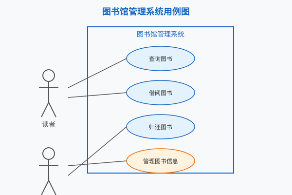
图示说明：矩形框内为用例，左侧“读者”与“查询图书”“借阅图书”“归还图书”关联，右侧“管理员”与“管理图书信息”“管理读者信息”“管理借阅记录”三个管理用例关联；“借阅图书”通过 <<include>> 指向“检查库存”，“推荐预约”通过 <<extend>> 指向“借阅图书”。
常见错误：
include 引入。include 箭头指向被包含用例，extend 箭头由扩展用例指向基用例。| 图符 | 形状 | 含义 |
|---|---|---|
| 外部实体 | 矩形 | 系统之外的数据源或数据去向，如“顾客” |
| 加工 | 圆角矩形/圆圈 | 对数据的处理，编号如 1、1.1、1.2 |
| 数据存储 | 开口矩形/两条平行线 | 数据保存处，命名如“D1 菜单数据” |
| 数据流 | 带箭头的线 | 数据移动方向，线上标注数据名称 |
编号规则：
0，表示整个系统。0 分解为若干主要功能加工，编号为 1、2、3…1.1、1.2、2.1…记忆口诀：顶层是「一个圈」，0 层是「几大块」，1 层是「再细分」。
为什么要分层画 DFD？因为一次性把所有细节画出来会过于复杂。分层画图可以逐步展开系统细节，每一层回答不同层次的问题：
| 层级 | 关注的问题 | 图中有什么 |
|---|---|---|
| 顶层图（上下文图） | 系统与哪些外部实体交互？交换什么数据？ | 1 个总加工 + 外部实体 + 系统边界数据流 |
| 0 层图 | 系统内部有哪些主要功能？它们之间如何交换数据？ | 主要加工 + 数据存储 + 数据流 |
| 1 层图 | 每个主要功能内部如何进一步实现？ | 子加工 + 更细的数据流 |
0，写在圆内或圆旁。0 展开：将系统拆分为 3~7 个主要功能加工，编号 1、2、3…1.1、1.2、2.1…顾客浏览菜单并下单，订单信息进入订单处理系统；厨房接收订单准备餐品；配送员取餐并配送；顾客可以查询订单状态。系统保存菜单数据、订单数据和配送数据。
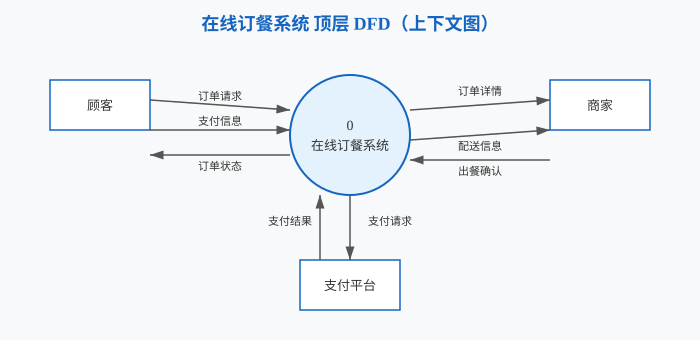
图示说明：顶层图用 1 个加工 0 表示整个「在线订餐系统」，外部实体包括顾客、商家、支付平台；系统与它们之间交换订单请求、支付信息、订单状态、订单详情、配送信息、出餐确认、支付请求/结果等数据。
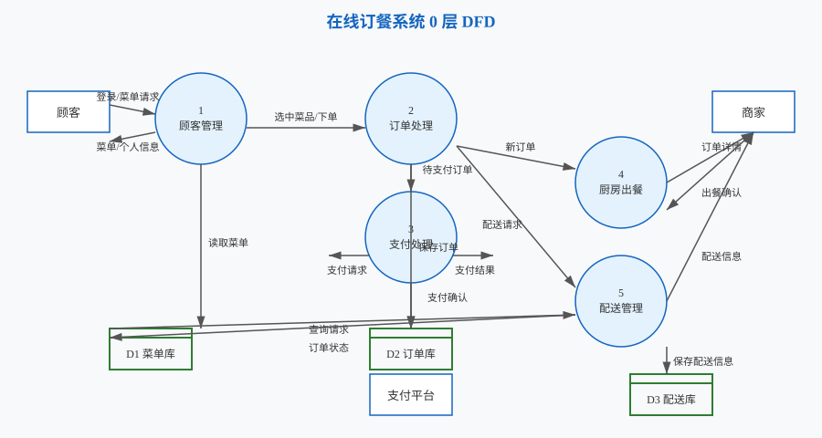
图示说明：0 层图把顶层加工 0 分解为顾客管理、订单处理、支付处理、厨房出餐、配送管理 5 个主要加工，并加入菜单库、订单库、配送库 3 个数据存储。顾客通过「顾客管理」浏览菜单，通过「订单处理」下单，支付平台通过「支付处理」完成支付，商家接收厨房通知和配送信息。
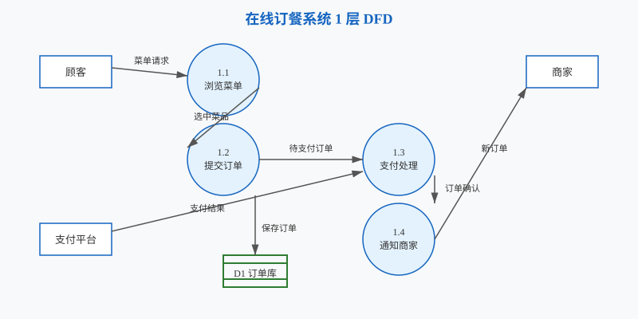
图示说明：1 层图对每个 0 层加工进一步细化。例如「订单处理」分解为接收订单、检查库存、生成待支付订单、确认订单；「支付处理」分解为发起支付、验证支付；「配送管理」分解为分配配送员、更新配送状态、处理查询。图中保留了主要数据流，实际绘图时可根据题目要求增减细节。
平衡原则：子图的输入输出数据流必须与父图中对应加工的输入输出保持一致。
例如，顶层图中「在线订餐系统」从顾客接收「订单请求」和「支付信息」，向顾客输出「订单状态」；那么 0 层图中所有加工合计接收的输入和输出的输出，也必须包含这些相同的数据流。
0），表示整个系统。| 图符 | 形状 | 含义 |
|---|---|---|
| 类 | 三栏矩形 | 类名、属性、方法 |
| 可见性 | + - # ~ |
分别表示 public、private、protected、package |
五种关系：
1..*）。学生可以选课、退课；每门课程由一名教师讲授；系统记录选课结果。学生有学号、姓名；课程有课程号、课程名、学分；教师有工号、姓名；选课记录包含选课时间和成绩。
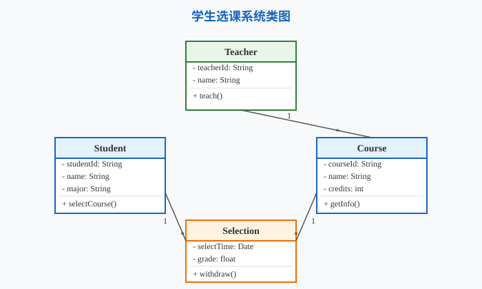
图示说明：核心类包括“学生”“课程”“选课记录”“教师”；“学生”与“课程”通过“选课记录”产生多对多关联；“教师”与“课程”为一对多关联；选课记录包含选课时间和成绩属性。
常见错误：
用户系统中有通用父类
Person，包含userId和name属性以及login()方法；Student和Teacher作为子类继承Person，并分别扩展自己的属性和方法。
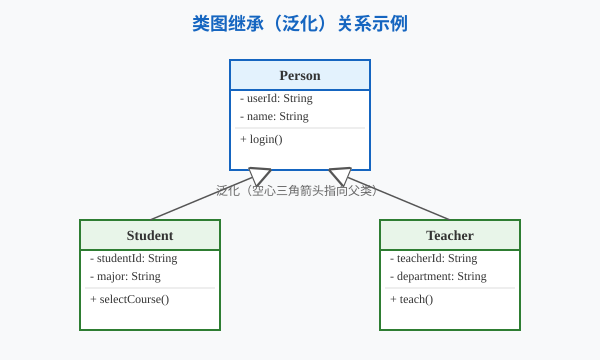
图示说明：Student 和 Teacher 通过泛化关系继承 Person；泛化用实线空心三角箭头表示，箭头由子类指向父类，即 Student → Person、Teacher → Person。
常见错误：
| 图符 | 形状 | 含义 |
|---|---|---|
| 对象 | 顶部矩形 | 参与交互的对象或角色 |
| 生命线 | 虚线 | 表示对象存在的时间 |
| 同步消息 | 实心箭头 | 调用并等待返回 |
| 异步消息 | 开放箭头 | 调用后不等待返回 |
| 返回消息 | 虚线箭头 | 方法调用返回 |
| 激活条 | 生命线上的窄矩形 | 对象正在执行活动 |
| 组合片段 | 矩形框 | loop 循环、alt 选择、opt 可选 |
loop、alt 等片段标注，并补全返回消息。用户插入银行卡并输入密码；ATM 向银行系统验证密码；验证成功后显示余额；用户输入取款金额；银行系统扣款；ATM 出钞并退卡。若密码错误则提示并退卡。
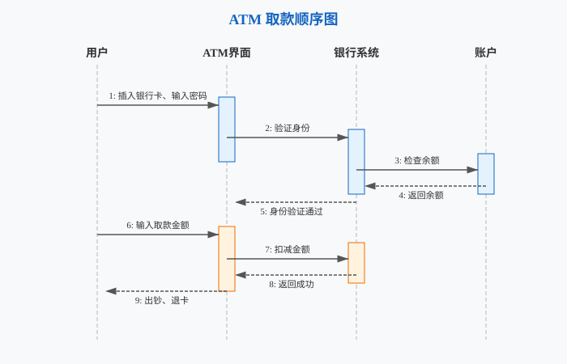
图示说明：对象从左到右依次为“用户”“ATM 界面”“账户验证系统”“银行账户”；用户插卡、输入密码、验证、显示余额、输入金额、扣款、出钞、退卡按时间顺序自上而下传递消息；密码错误分支用 alt 片段表示。
常见错误：
| 图符 | 形状 | 含义 |
|---|---|---|
| 状态 | 圆角矩形 | 对象在生命周期中的某种情形 |
| 转换 | 带箭头的线 | 状态之间的变化 |
| 事件 | 转换线上的文字 | 触发转换的动作或信号 |
| 监护条件 | [条件] |
仅在条件为真时才发生转换 |
| 初始状态 | 实心圆 | 状态起点 |
| 终止状态 | 实心圆外加空心圆 | 状态终点 |
订单提交后进入“待支付”状态；支付成功后变为“待发货”；商家发货后变为“已发货”；用户确认收货后变为“已完成”。用户可在支付前取消订单；支付失败也回到“待支付”或进入“已取消”。
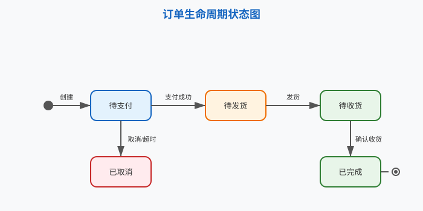
图示说明：订单从“待支付”开始；支付成功后进入“待发货”，发货后变为“已发货”，收货确认后进入“已完成”；取消操作或支付失败会使订单进入“已取消”。
常见错误：
图符与规则
| 图符 | 形状 | 含义 |
|---|---|---|
| 起始/终止节点 | 实心圆/同心圆 | 流程起点和终点 |
| 活动节点 | 圆角矩形 | 一个具体活动 |
| 判断/合并节点 | 菱形 | 分支与汇合 |
| 分叉/汇合节点 | 粗黑线 | 并行活动的开始与结束 |
| 泳道 | 纵向分区 | 划分不同责任角色 |
文字 → 活动图：三步法
示例：请假审批流程
员工提交请假申请；主管审批；若批准则进入人事备案并通知员工；若驳回则返回员工修改或取消。
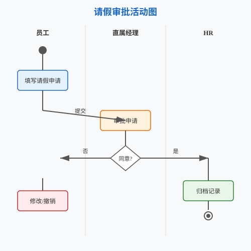
图示说明：泳道分为“员工”“主管”“人事”；员工提交申请，主管判断后分支，批准进入人事备案，驳回返回员工。
图符与规则
| 图符 | 形状 | 含义 |
|---|---|---|
| 实体 | 矩形 | 现实世界中可区分的事物 |
| 属性 | 椭圆 | 实体的特征 |
| 联系 | 菱形 | 实体之间的关联 |
| 基数 | 1:1、1:n、m:n | 实体参与联系的数量关系 |
文字 → E-R 图：三步法
示例：图书借阅系统
图书借阅系统涉及读者、图书和借阅记录。读者有读者编号、姓名；图书有 ISBN、书名、作者；一次借阅产生一条借阅记录，包含借出日期和归还日期。
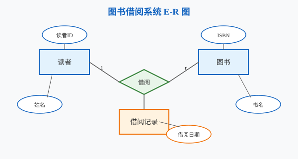
图示说明：实体包括“读者”“图书”“借阅记录”；读者与图书之间通过“借阅”联系，通常为 m:n 关系，借阅记录作为独立联系实体记录借还日期。
图符与规则
| 图符 | 形状 | 含义 |
|---|---|---|
| 构件 | 带两个标签的矩形 | 可部署的软件模块 |
| 接口 | 小圆 | 构件对外提供的服务 |
| 节点 | 立方体 | 硬件或运行环境 |
| 依赖 | 虚线箭头 | 构件或节点之间的依赖关系 |
适用场景：描述系统的物理结构、模块划分、软硬件部署关系。
示例：Web 应用部署
客户端浏览器通过 HTTP 访问 Web 服务器；Web 服务器与应用服务器通信；应用服务器连接数据库服务器，形成典型的三层部署结构。
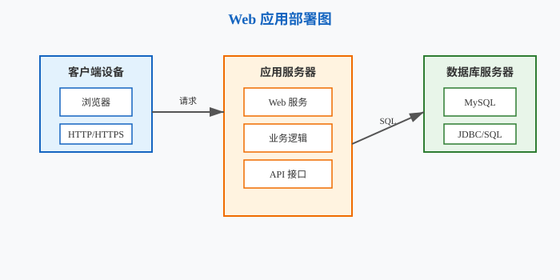
图示说明：三个节点分别为“客户端浏览器”“Web 服务器”“应用服务器”“数据库服务器”；节点之间用带通信协议标注的连线连接。
图符与规则
| 图符 | 形状 | 含义 |
|---|---|---|
| 顺序结构 | 矩形框上下堆叠 | 语句按顺序执行 |
| 选择结构 | 矩形框内嵌套分支 | if/else 判断 |
| 循环结构 | 矩形框内嵌套循环体 | while/for 循环 |
适用场景：结构化详细设计，清晰表达算法逻辑，避免流程线交叉。
示例：判断三角形类型
输入三条边 a、b、c，先判断能否构成三角形；若能，再判断是等边、等腰还是普通三角形；若不能则输出“不能构成三角形”。
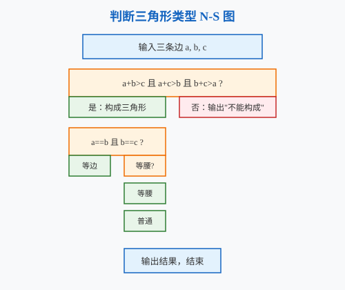
图示说明：最外层判断“能否构成三角形”；内部再按等边、等腰、普通三角形顺序嵌套选择结构。
图符与规则
| 图符 | 形状 | 含义 |
|---|---|---|
| 节点 | 圆角矩形/圆圈 | 程序基本块，内部语句顺序执行 |
| 有向边 | 箭头 | 控制流向 |
| 判定节点 | 引出多条边的节点 | 含分支条件 |
适用场景：白盒测试路径分析、计算环形复杂度。
环形复杂度公式：
$$ V(G) = E - N + 2P $$
其中，$E$ 为边数，$N$ 为节点数，$P$ 为连通分量数（通常为 1）。
示例：简单函数控制流图
函数接收整数 x，若 x > 0 则返回 x，否则返回 -x。
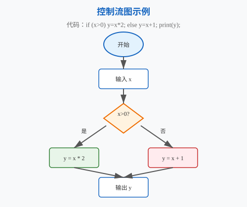
图示说明：起始节点接收 x，判定节点判断 x > 0，分别引出“返回 x”和“返回 -x”两条分支，最终汇合到结束节点。
题目：医院预约挂号系统中，患者可以注册登录、查询医生排班、预约挂号、取消预约；医生可以查看自己的预约列表；系统每日自动发送就诊提醒。挂号时需要验证患者身份信息（include）。
参考答案：
include 验证患者身份信息。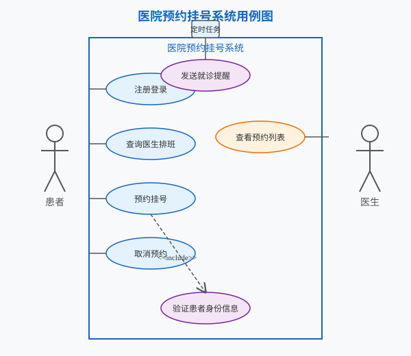
题目：快递包裹查询系统：用户输入快递单号，系统从快递数据库查询物流信息，返回给用户。快递员可以扫描包裹更新物流状态。
参考答案：
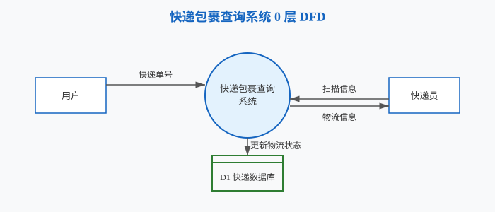
题目：博客系统：用户可以发布文章、评论文章。文章有标题、内容、发布时间。评论有内容和评论时间。用户可以关注其他用户。
参考答案：
* 对 *。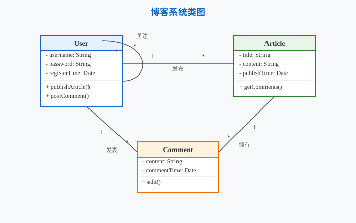